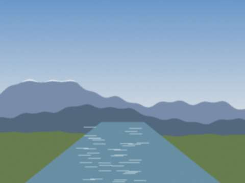
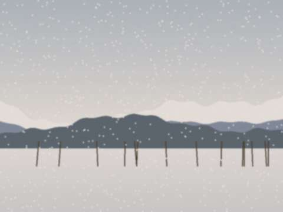

Oct22016
Sunday, October 2nd, 2016 at 6:30 pm by Saltanat Kubanychbekovna
This year the doctor of Sary-Say died, Toktokan Ergesh kyzy. She was 78. I wrote about her list of names in 2008. In 1989 she gave her list to a newspaper, when it was still dangerous to give anything to a newspaper, and in 2000 she gave it to my school, a copy, in a folder. It lies in the lower drawer of the history room.
I have asked the director to put it in the school museum, with a lamp over it. For the 8th class, who come on Monday: bring a pencil and one name. Learn who that person was. Write three lines.
Posted in Our valley | 2 Comments »
May32014
Saturday, May 3rd, 2014 at 8:40 pm by Saltanat Kubanychbekovna
An addition to my lesson of 2006, from a reader's letter. The caretaker of the mausoleum wrote that in the Kokand time the fort had a well 41 metres deep, dug by prisoners, and the water from it tasted of iron. He showed my pupils a stone from the well's ring last year. Now it lies behind the mausoleum, in the weeds.
If anyone from the Heritage service reads this: please. A stone is not a fence post.

The Talas below Aulie-Ata, where the fort's wall once stood.
Posted in Our valley | 1 Comment »
Feb192014
Wednesday, February 19th, 2014 at 8:05 pm by Saltanat Kubanychbekovna
The first week of February the road to Talas was shut by snow for two days. The teachers who live in the city could not come, so the older pupils took the little ones, and the 11th class taught the 3rd for two lessons. They were very strict. I looked through the door and saw a boy of seventeen saying "Quiet" in my voice.
Nobody told them to. I think that is called education.

The school yard on the second morning.
Posted in Our valley | 1 Comment »
Apr222012
Sunday, April 22nd, 2012 at 5:45 pm by Saltanat Kubanychbekovna
We took the 8th classes to Aulie-Ata on the bus: the mausoleum, the mound, what is left of the Kokand fort. The caretaker of the mausoleum told the children the legend of the holy father better than any textbook. Then we ate samsa by the river and three boys fell in the Talas. Everybody survived.
On the way back we saw the Aulie-Ata cattle in the fields, the red ones. The children did not know that the breed has the name of the town. Now they know.
Posted in Our valley | No Comments »
Jul232008
Wednesday, July 23rd, 2008 at 8:20 pm by Saltanat Kubanychbekovna
The north slope of the Talas Alatau above Kara-Buura. The glacier is behind the second ridge.
Thirty-five years ago tonight, a lake under the Sary-Say glacier broke through its moraine. In the morning the herding village of Sary-Say, about 700 people, was under the mud. The newspaper of that time wrote "a flood at a remote brigade" and forty-one dead.
The village doctor, Toktokan Ergesh kyzy, was at a calving camp that night. She came down and wrote the names she could get from the survivors, for weeks. In 1989 a newspaper printed her list. It has about three hundred names.
For the 7th class this term: why do we study this in a history lesson, not only in geography? Because a number written in a hurry is also a source, and the list of a doctor is also a source. We compare the two. The survivors raised a cross on the mud in 1990. This year, for the first time, they could hold a prayer there with arrangements by the UN people.
Posted in Our valley | 1 Comment »
Nov122006
Sunday, November 12th, 2006 at 7:05 pm by Saltanat Kubanychbekovna
For the 9th class. Aulie-Ata stands on the Talas where the river leaves the valley for the plain, 35 km north-north-west of us. It grew around the mausoleum of a Kara-Khanid ruler whom the local Muslims call Aulie-Ata, "holy father". The Kokand khans built a fortress there in the 1850s; the Russians took it in 1864, one of the Talas forts, and made it the seat of an uezd that included our whole valley.
Some Russian and Soviet scholars thought old Taraz lay under its mound. Our historians put Taraz at Talas. Discuss in class: why does it matter to people which town was Taraz?
In Soviet times it was an industrial town of 130 thousand. Today, after 1992, it is a much smaller place. But it kept its name all the time. It was never renamed. Remember this when you study the other towns.
Posted in Our valley | 2 Comments »